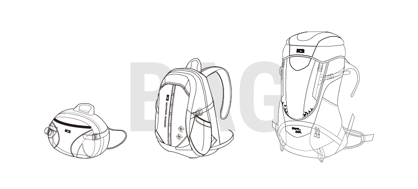

배낭

- 산행 & 계절별 선택 가이드
-
- 단기 & 하절기 산행
간단한 당일 산행용으로 짐이 많지 않습니다.
보통 여성분들은 15~28리터, 남성분들은 25~38리터 정도의 사이즈를 선택하십니다.
- 중기 & 동절기 산행
산에 세워진 숙박시설, 즉 산장 같은 곳을 이용한 주말 산행을 하시거나 보온성 의류 등 짐의 부피가 커지는 동절기에는 중, 대형 배낭을 선택하시는 것이 좋습니다. 보통 여성분들은 28~38리터, 남성분들은 38~45리터 정도의 사이즈를 선택하십니다.
- 장기산행
종주 등 장기 산행을 하시는 경우에는 짐이 많아지게 되므로, 최소 45리터 이상의 초대형 배낭을 선택하시는 것이 좋습니다.
초대형 배낭은 천막, 침낭등을 휴대하는 장기 야영산행용으로 사용하게 됩니다.
- 관리요령
-
- 배낭 세탁은 먼저 배낭을 뒤집어서 안에 들어간 먼지나 흙 등을 털어낸 뒤 원래대로 복원합니다. 이때 물에 오래 담가두거나 기계세탁을 할 경우 사용된 원단의 방수 처리 효과가 떨어지므로, 솔과 세제를 이용하여 땀이 많이 밴 멜빵과 등판 부분을 먼저 세탁하고 그외 부분은 때가 탄 부분을 중심으로 세탁한 뒤 맑은 물에 몇 번 헹구어 그늘에서 말립니다.
- 배낭 꾸리는 요령
-
- 가지고 갈 짐이 5kg 이상일 경우 가벼운 것은 아래에 넣고 무거운 것은 위로 가도록 해 무거운 물건이 어깨와 등판 쪽에 붙도록합니다. 하산 시에는 위쪽에 무거운 것을 두면 균형이 깨지기 쉬우므로 어깨보다 위에는 무거운 것을 두지 않습니다.
- 자주 사용하는 물건(칼, 나침판, 지도, 휴지 등)이나 간식 등은 배낭의 뚜껑 또는 양쪽 주머니에 넣습니다. 컵이나 수통 등을 매다는 것은 좋지 않습니다. 배낭의 바깥에 매달면 움직일 때마다 흔들리고 무게의 쏠림으로 체력 분산을 초래해 에너지 소모가 많아집니다.
- 휴지 등 방수포장이 필요한 물건과 내의류는 비닐봉투를 이용해 포장하고, 모양이 울퉁불퉁한 물건 주변은 여벌 옷 등을 이용해 빈 공간을 채워 배낭 모양이 흐트러지지 않게 합니다.
- 배낭 좌우의 모양과 무게가 균일하게 되도록 합니다.
- 짐을 넣는 순서는 배낭 맨 아래쪽에 가볍고 부피가 큰 침낭과 의류를 넣고 다음에 버너, 코펠, 식량, 연료 등을 넣고 끝으로 카메라 등 깨질 위험이 있는 물건을 넣습니다. 특히, 카메라는 산행 중에 사용할 보온용 의류나 방풍의 등으로 감싸 넣는 것이 좋습니다.
- 취급 주의사항
-
- 등산 배낭 이외의 용도 절대 사용금지
- 제품에 표기된 기준 용량을 준수하여 사용
- 배낭 속에 동물 등 생명체를 넣을 경우 질식 사고로 인한 위험이 있으므로 절대 주의
- 배낭 외부에 끈 웨빙, 장식 류가 나뭇가지 또는 기타 돌출물에 걸려 넘어갈 수 있으니 끈 및 웨빙 등을 배낭에 밀착 시켜서 걸리지 않도록 정리
- 화학제품이 피부에 닿을 경우알러지등 부작용이 생길 수 있으니 주의하시고, 문제 발생시에는 사용을 중지하시고 의사의 처방을 받음
- 바위 및 거친 물질에 접촉 시 원단이 파손될 수 있으니 주의
- 정확한 사용방법을 숙지하여 용도 외 사용금지
- 내구성 강화를 위하여 화학처리를 하였으니 어린아이들이 입에 넣지 않도록 주의
- 지퍼 이빨에 손가락 등 신체 부위가 끼어서 상해를 입을 수 있고, 봉제선 사이로 물이 스며들 수 있음 (RAIN COVER 필히 사용)
- 체형, 내용물의 하중에 따라 어깨 및 허리가 아플 수 있으니 배낭 수납 방법 준수
- 내장되어 있는 후레일(알루미늄)은 자기의 체형에 맞도록 휘어서 사용
- 배낭속에 날카로운 물체를 넣었을 시 돌발 상황에서 신체에 손상을 입을 수 있음
- 배낭 형태에 의한 구분방법
-
- HOOD 형
'후드형 배낭'이라 불리며 용량은 TEAR DROP형에 비해 크라 후드를 열고 닫아야 하는 불편함과 배낭의 앞판등에 포켓사용의 제한이 있어 배낭을 자주 개페를 안하고 동일 용량 대비 수납공간이 큰 배낭을 필요료 할 때 적합합니다.
- TEAR DROP형
일반적인 배낭 형태로 아랫부분이 넓고 위쪽으로 갈수록 좁은 스타일이며, 후다형에 비해 적으나 다양한 포켓 활용으로 용도에 맞게 수납할 수 있으며, 편리성이 큰 장점이 있습니다.